每位七张独立图片 · 点击放大，逐帧下载 · 6.90s 回到 K1
中国 / 7 KEYFRAMES
DeepSeek


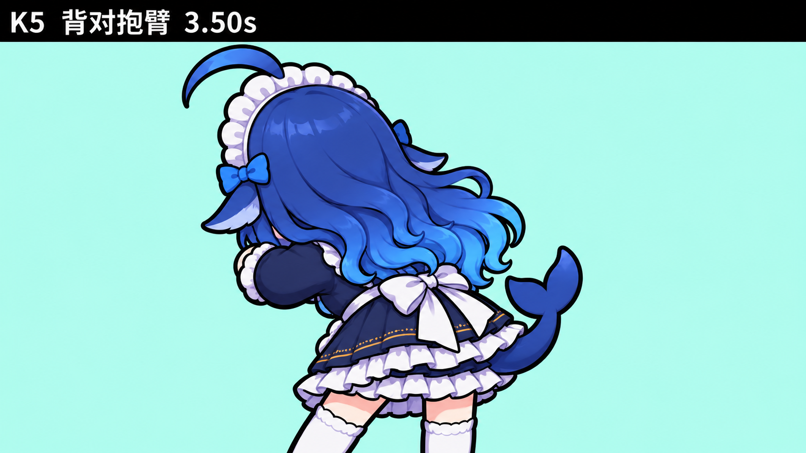

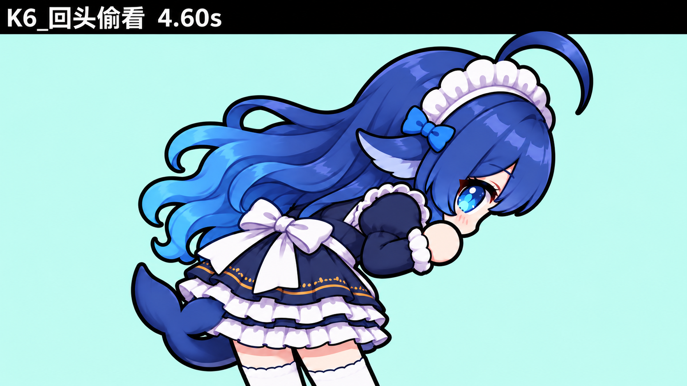

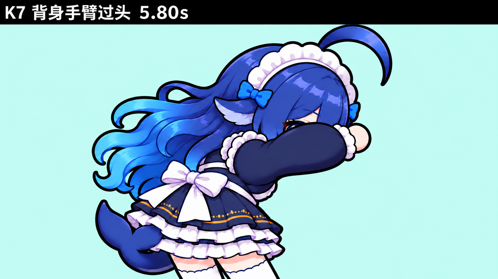

中国 / 7 KEYFRAMES
通义千问 Qwen


中国 / 7 KEYFRAMES
Kimi


中国 / 7 KEYFRAMES
智谱 GLM


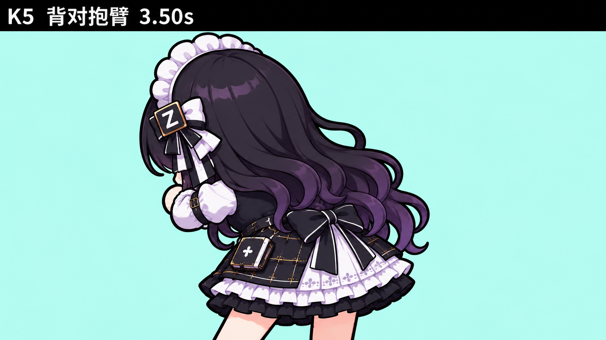


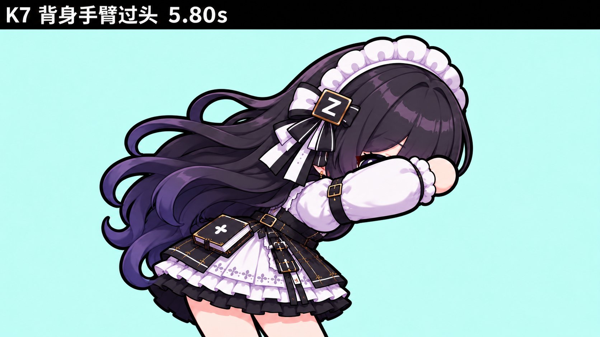

美国 / 7 KEYFRAMES
ChatGPT / GPT


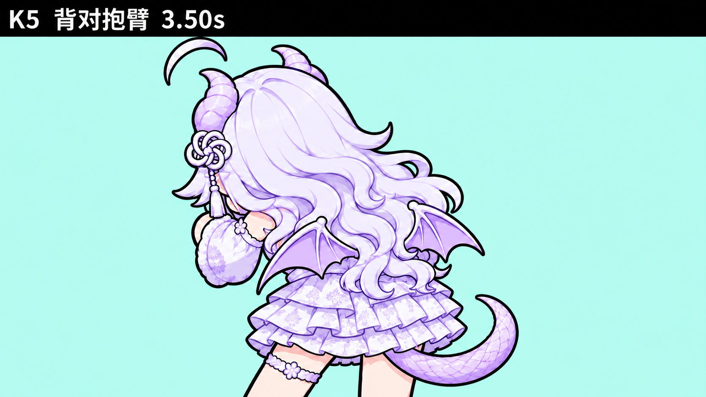

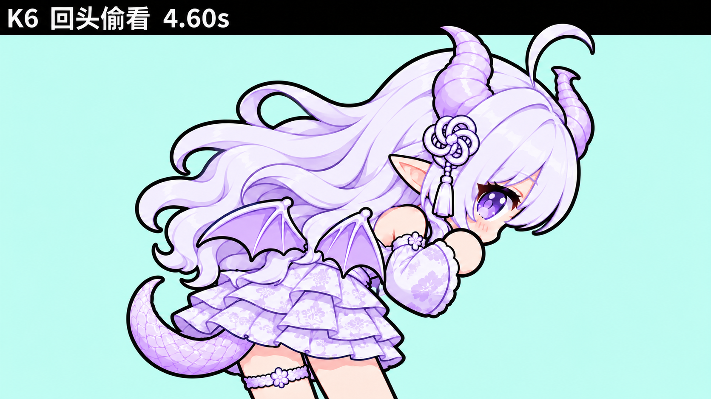

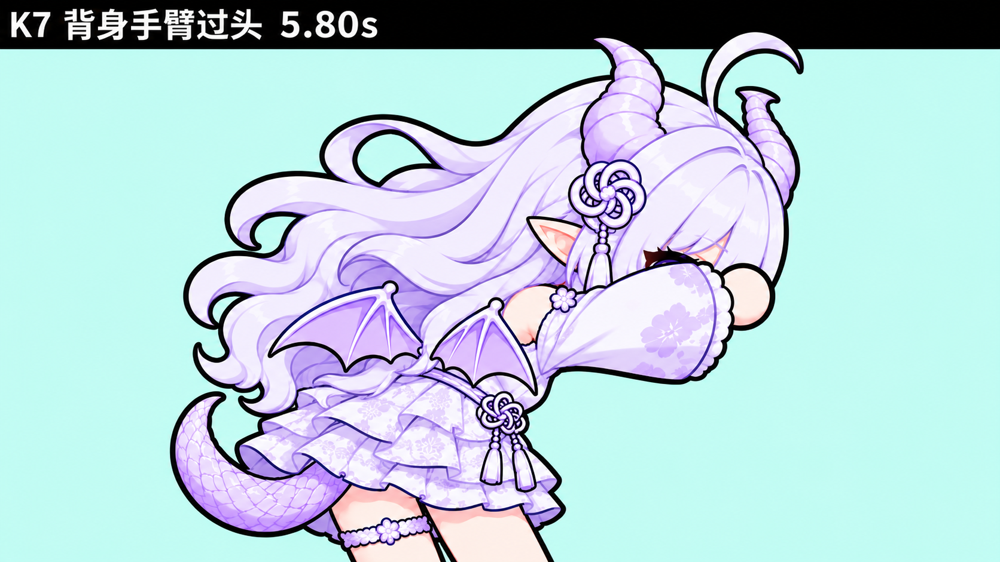

美国 / 7 KEYFRAMES
Claude


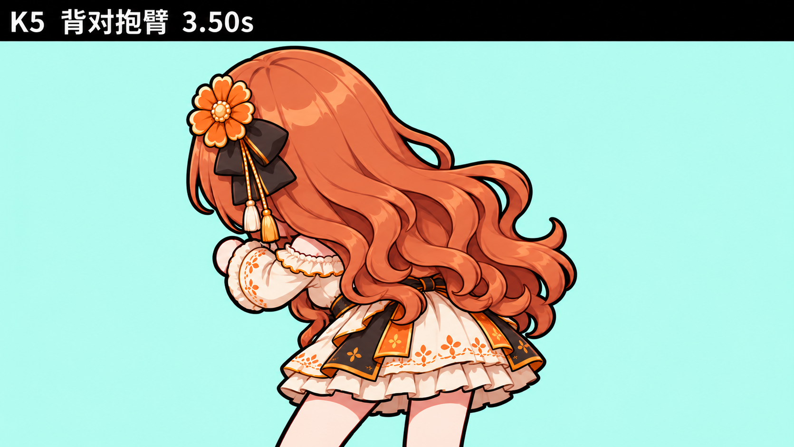


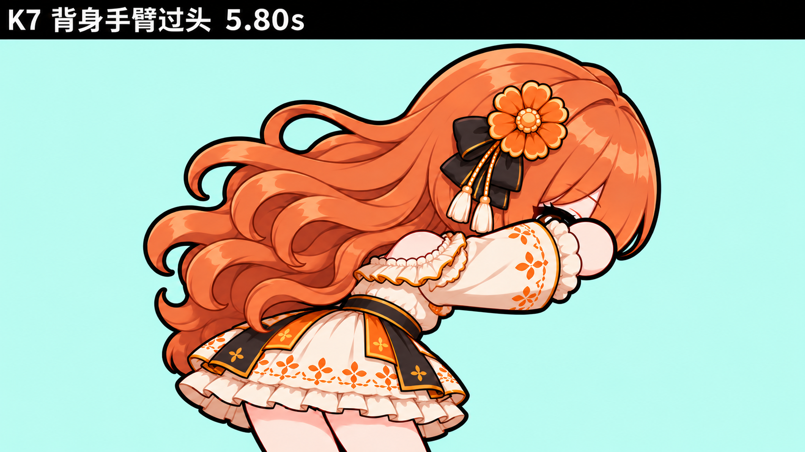

美国 / 7 KEYFRAMES
Gemini


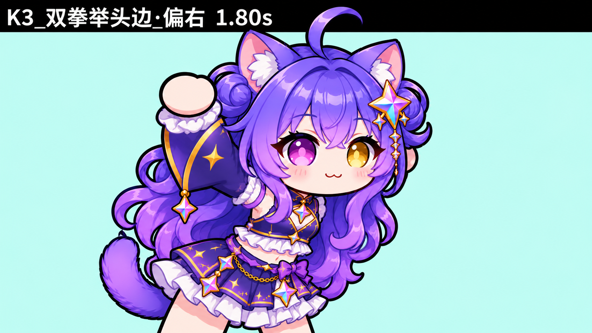


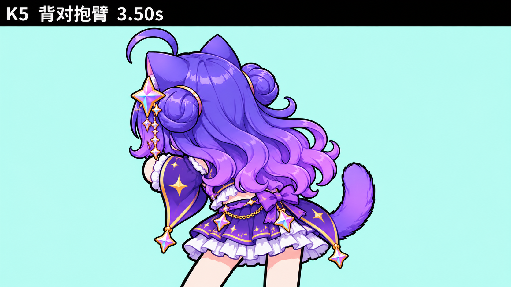


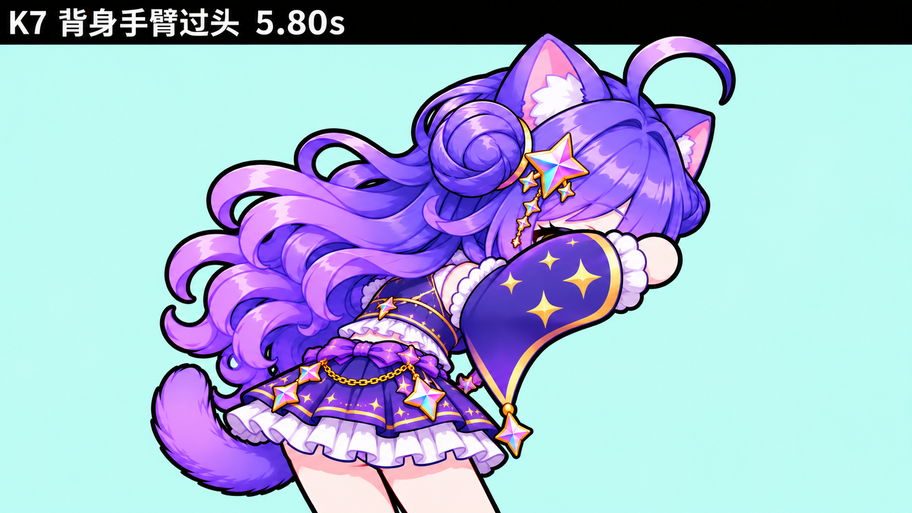

美国 / 7 KEYFRAMES
Grok


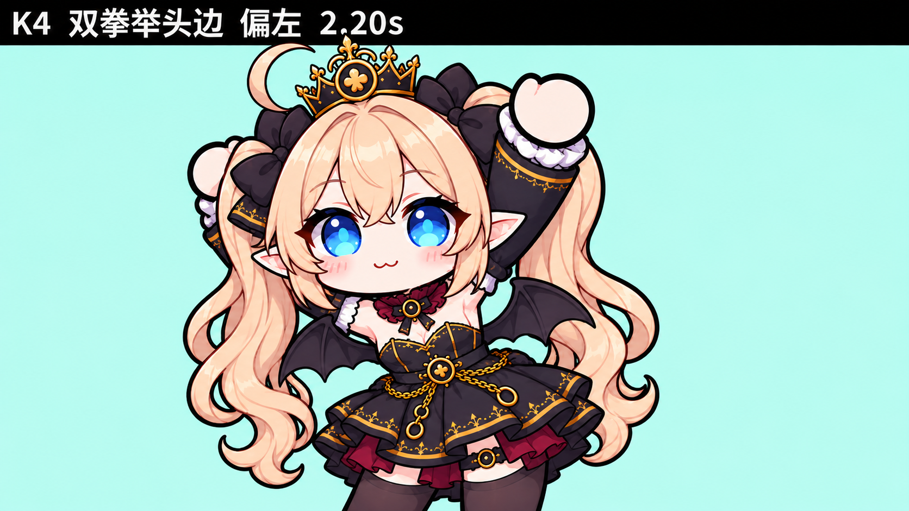

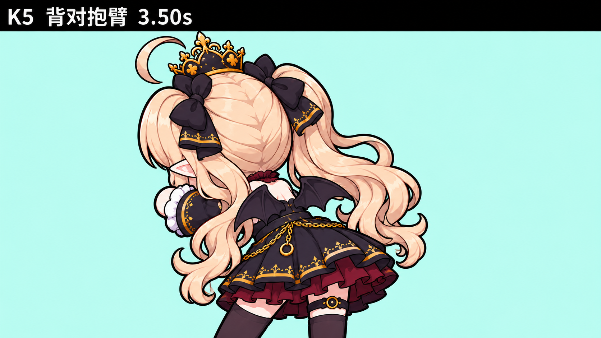

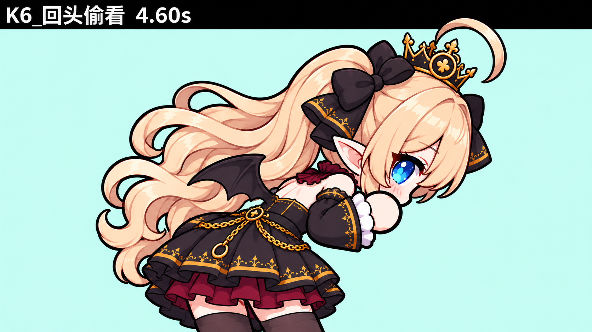

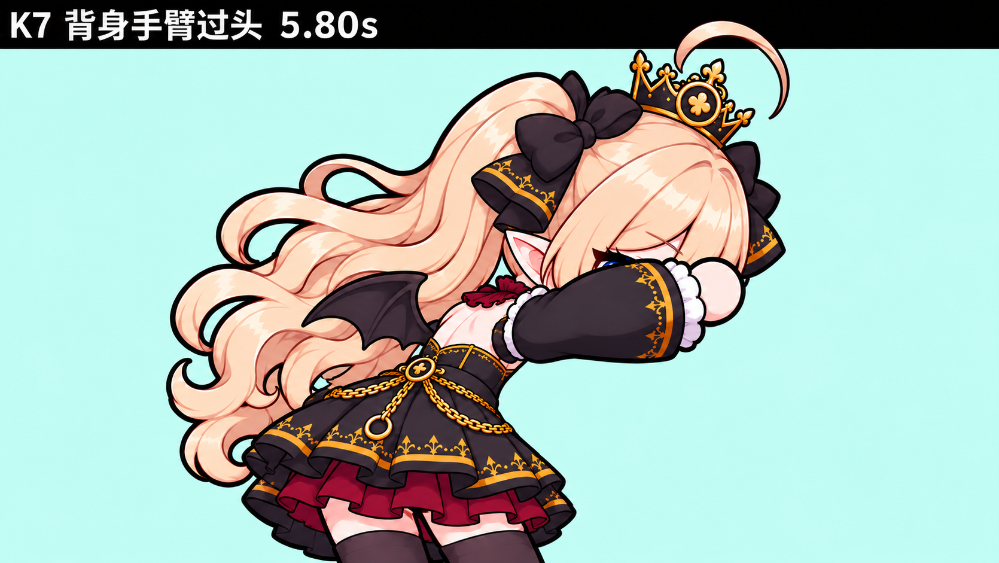